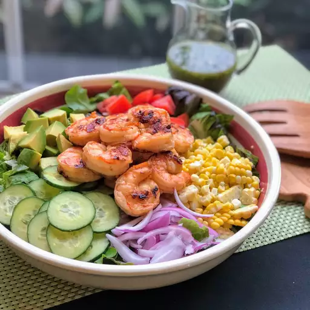

Summer Shrimp Salad

Ingredients
- 1 tablespoon olive oil
- 2 ¼ teaspoons smokehouse maple seasoning (such as McCormick Grill Mates)
- 1 ½ teaspoons lemon juice
- 12 ounces peeled and deveined shrimp
Cilantro Vinaigrette
- ¼ cup extra-virgin olive oil
- 2 tablespoons honey
- 2 tablespoons fresh lime juice
- 2 tablespoons chopped cilantro
- 1 tablespoon balsamic vinegar
- salt and ground black pepper to taste
Salad
- 4 cups mixed salad greens, or more to taste
- ½ cup thinly sliced English cucumber
- ⅓ cup freshly cooked corn
- ½ cup diced tomato
- ¼ cup sliced red onion
- 1 avocado, diced
Directions
- Combine olive oil, maple seasoning, and lemon juice in a glass bowl. Add shrimp and toss to coat. Refrigerate until ready to grill.
- Whisk olive oil, honey, lime juice, cilantro, balsamic vinegar, salt, and pepper together in a small bowl. Set vinaigrette aside.
- Preheat an indoor or outdoor grill to medium-high heat. Thread the shrimp onto skewers. Grill until shrimp turn pink and opaque, about 2 minutes per side. Remove from skewers and set aside.
- Place mixed greens in the bottom of a large salad bowl. Lay cucumber, corn, tomato, red onion, and avocado in sections on top of the greens. Pile the grilled shrimp in the center of the salad. Drizzle with the vinaigrette and toss to coat. Serve immediately.